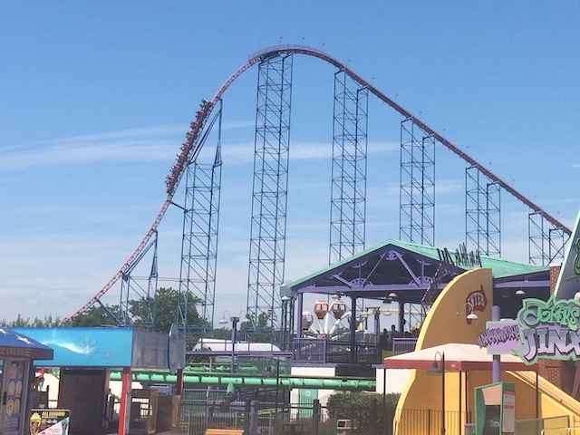
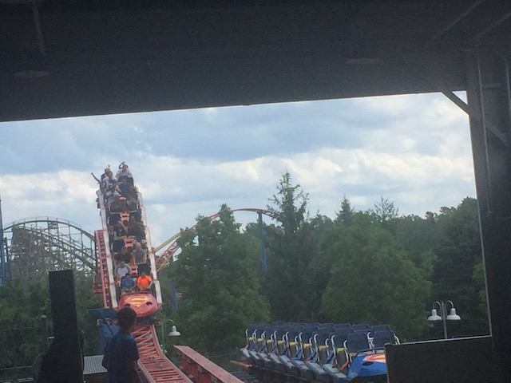
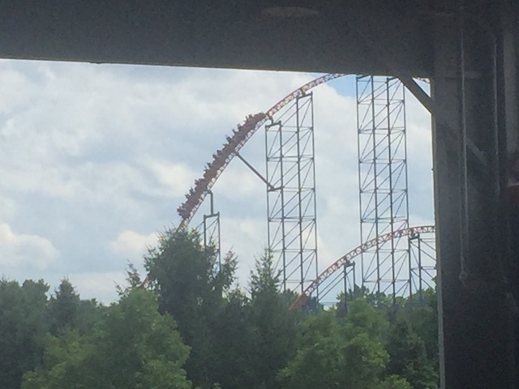
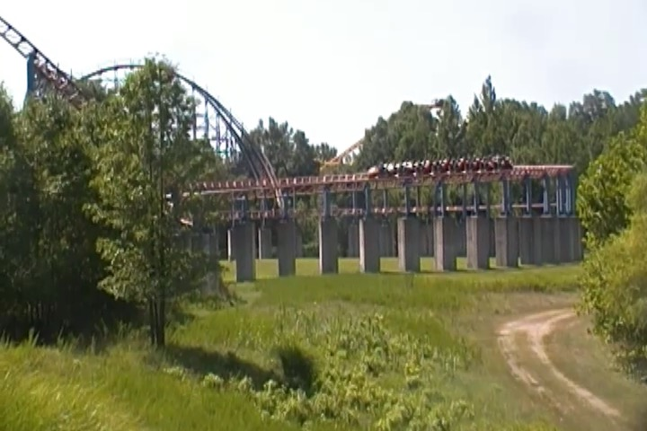
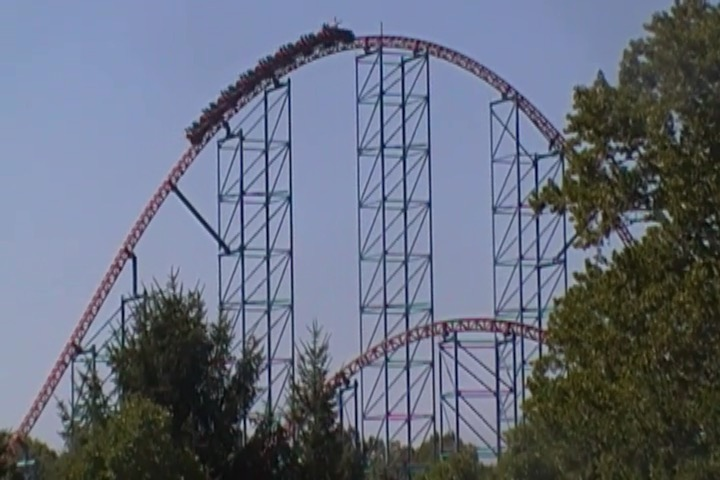
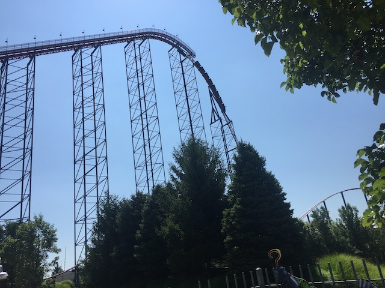
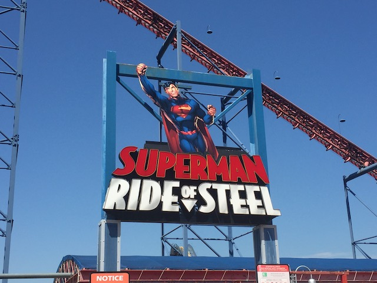

| |

Superman: Ride of Steel Review

For today's reviewq, we're traveling back in time to when Six Flags America still existed in order to ride what many people consider to be their star attraction (I personally don't due to thinking this ride was overrated and other less popular coasters here underrated), Superman: Ride of Steel. This was the parks hyper coaster, and an Intamin Hyper Coaster at that. SWEET!!! Those are some of the best coasters on the planet! OK, yeah. It's true that Superman was one of the weakest Intamin Hyper Coasters, around the same level as Thunder Dolphin (OK, it was better than Thunder Dolphin. I'll give it that), and it still was a really fun coaster. So yeah. Let's hop on and take a ride. Get in the seats, buckle the seatbelts, pull down the lap bar, and away we go! We rolled around a turn and then began to climb the MASSIVE lifthill. We just climbed and climbed and climbed. Looked around, and.....there really wasn't much to see. Some of the coasters at Six Flags America, sure. But aside from that, just grass and fields. But don't worry. It was a relatively fast lifthill, so you're up at the top pretty quickly. And sure enough, we then began to drop. And this thing poured on the speed. In the back, there was even some airtime. So far, this was kicking ass! Sounds like all the hype for this coaster was correct. We then headed into a banked turn right at the bottom of the first drop. This sounds crazy, but don't worry. You weren't gonna get whiplash and have an overload of Lateral Gs. But hey. We then got to rise up into a giant airtime hill. And....this thing was STRONG!!! We got a NICE pop of ejector air here! SWEET!!! This was AWESOME!!! All right. Dropped back down, gained more speed, and went through some straight track. Uh....OK. Random, but it wasn't much. And then we got to GIANT HELIX OF DEATH!!! And I'm just gonna come out and say it. This thing looked WAY cooler than it actually was. You see, the giant helix was so big that it took out all the laterals, and at this point, it honestly just felt like a giant section of straight track. Honestly, if you closed your eyes, you probably would've assumed that this part of the ride was just straight track. Yeah, it may have looked cool, but it was just going in circles. Hell, kind of reminded me of the Rose Bowl from Son of Beast in a way (except....this was MUCH better). Well, at least we got some cool headchoppers, and then....STRAIGHT TRACK!!! GOD DAMN IT!!! Ugh. Just rip through it and run towards the airtime hill. It's like a sprint at this point. And finally, ahh.... We finally got rewarded for all of the straight track and giant helixes that might as well be straight track with an airtime hill. And it was really good strong ejector air. YES!!! That was REALLY good. And after that, we moved onto.....another giant helix. God damn it. And this one was even worse, because this one is also upwards, so we lost some speed. Ugh. This thing was honestly, the Great Bear of Hyper Coasters. Both are fun rides, but both are just too full of random crap that really hinder them from being great. Moving on, we went through another sort of awkward turn, and now the ride got good again. AIRTIME HILL!!! WEE!!! And from here on out, the rest of the ride was nothing but ejector air! Go over a bunny hop, EJECTOR AIR!!! Go over another one! EJECTOR AIR!!! ONE MORE BUNNY HOP!!! ONE MORE POP OF EJECTOR AIR!!! And glide right into the brake run, which was right into the station. So at least there was no time wasted between the brake run and the end. So yeah. I'm torn on this ride. On the one hand, it did have great ejector air, a lot of speed, and a great first drop. But....the straight track and forceless helixes definately weaken it, and when I hear people call this one of the best coasters in the country, I just can't agree. Not with that much straight track and forceless helixes. It's not even the best coaster at Six Flags America. Let alone one of the best coasters in the country. But at the same time, it's still a real shame that this ride is now gone (I think this is officially the first ever defunct hyper coaster) because it still was a REALLY fun coaster. The one upside about this rides death is that it's gonna be used as a parts donor for its clone, Superman: Ride of Steel, over at Darien Lake (the biggest park in the country I still have yet to hit). So at least you can ride a clone of this at Darien Lake, still.
8/10
Location: Six Flags America
Opened: 2000
Died: 2025
Built by: Intamin
Last Ridden: July 22, 2019
Superman: Ride of Steel Photos






Home
|